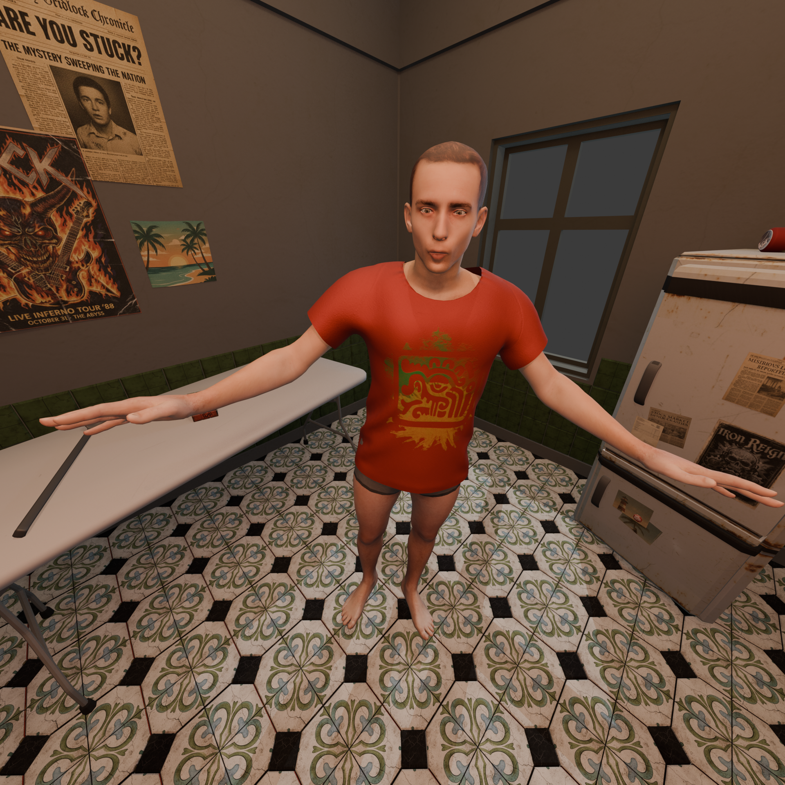
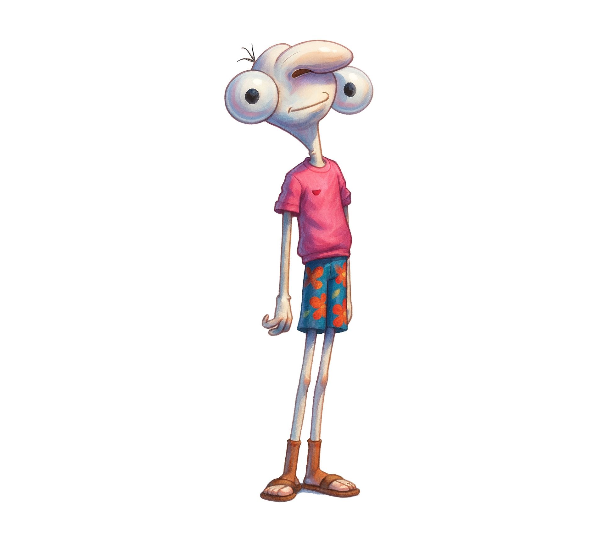
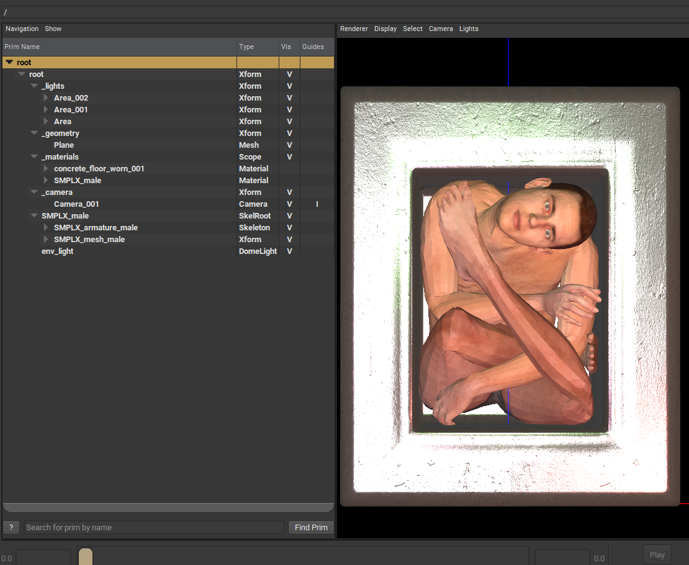
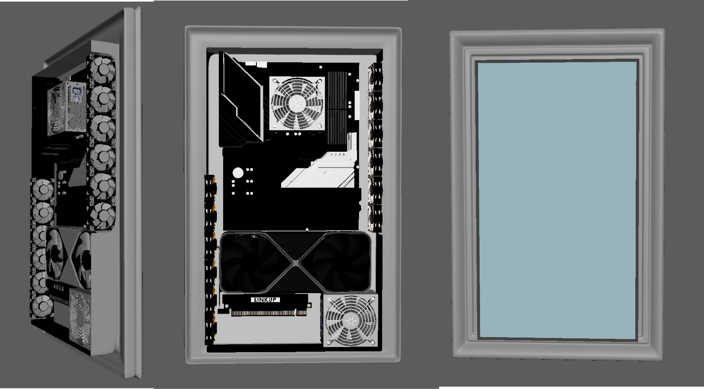
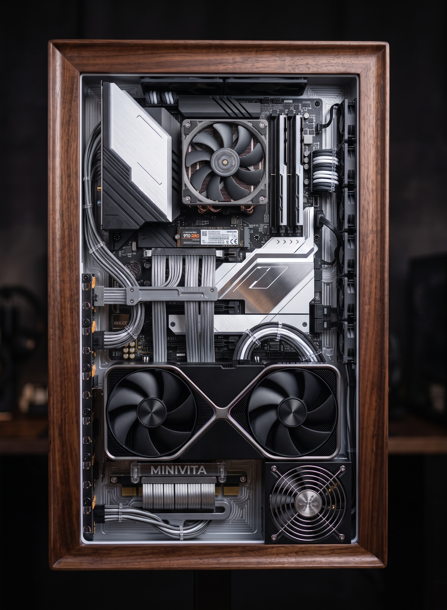

MINIVITA
End of Modern Humanism
Simulació d'espècimen digital autònom en temps real • Cicle de decisió temporal a 16 FPS • Arquitectura de memòria vectorial d'alta dimensionalitat i moviment procedural.
End of Modern Humanism
Simulació d'espècimen digital autònom en temps real • Cicle temporal a 16 FPS

Topologia de Memòria Vectorial
Indexació contínua d'embeddings • Retenció no supervisada en alta dimensió
A diferència dels sistemes d'IA convencionals dependents de prompts de text, MINIVITA manté una continuïtat existencial pròpia mitjançant un dipòsit de memòria vectorial d'alta dimensionalitat.
-
[01]
Retenció Episòdica Contínua: Cada decisió perceptiva es codifica en vectors latents de 1536 dimensions, evitant la pèrdua d'estat entre fotogrames.
-
[02]
Recuperació Associativa Cosinus: Consultes de similitud en menys de 4.2ms permeten a l'espècimen evocar patrons morfològics previs de manera orgànica.
-
[03]
Deriva Conductual Sense Bucles: L'acumulació dinàmica de vectors impedeix que l'agent quedi atrapat en repeticions mecàniques o ciclicitats artificials.

Arquitectura de Moviment Procedural
Rig de 28 ossos procedurals • Pipeline gràfic OpenGL / GLSL sense animació pre-gravada
MINIVITA no utilitza clips d'animació pre-gravats ni keyframes tradicionals. Tota la seva motricitat és generada en temps d'execució mitjançant lleis cinemàtiques procedurals i físiques elàstiques.
-
[01]
Esquelet Procedural de 28 Nodes: Articulacions interconnectades per dinàmiques de molla i amortidor (spring-damper) que responen a la inèrcia de l'espècimen.
-
[02]
Cinemàtica Inversa (IK): Resolució trigonomètrica contínua que adapta les extremitats sintètiques als límits físics de la gàbia digital.
-
[03]
Shaders GLSL a Mesura: Dispersió subsuperficial (SSS), reflexió cromàtica refractiva i deformació per soroll Simplex en temps real.
Nucli Cognitiu Quantitzat
charLLM autònom • Pulsions internes • Desacoblament absolut de serveis al núvol
L'autonomia de MINIVITA descansa en un model lingüístic d'escala reduïda quantitzat a 4 bits (charLLM) que resideix exclusivament en la VRAM de la instal·lació física, garantint operació autònoma perpètua.
-
[01]
Model de Pulsions Pròpies: L'espècimen manté paràmetres interns d'escrutini, curiositat, fatiga i necessitat de refugi que guien el seu comportament.
-
[02]
Traducció de Pensament a Latent: Els tokens generats per charLLM es projecten com a vectors de control al procés de difusió generativa.
-
[03]
Soberania Computacional: Cap API externa ni connexió a Internet intervé en el cicle biològic de l'espècimen a la sala.

Dispositiu Físic & Terrari Digital
Monòlit d'alumini anoditzat • Sensorització de presència per LiDAR • Pantalla vertical 4K


Concebut com una escultura tecnològica vertical, el terrari físic confina l'espècimen dins d'un monòlit d'alumini fresat i vidre d'alta transparència, dissenyat per a l'espai de galeria.
-
[01]
Interacció per Presència (LiDAR): El dispositiu no disposa de pantalles tàctils ni botons; percep la distància física de l'espectador, alterant la dilatació de l'espècimen i el seu vector de mirada.
-
[02]
Acústica de Ressonància Sòlida: Transductors fixats a l'estructura fan vibrar el propi metall, generant un so tàctil de baixa freqüència.
-
[03]
Enginyeria Tèrmica Passiva: Refrigeració convectiva silenciosa per garantir operació contínua durant mesos d'exhibició sense fallada.
Marc Conceptual & Temporalitat 16 FPS
End of Modern Humanism • L'espècimen sintètic com a subjectivitat viva autònoma
MINIVITA qüestiona la concepció antropocèntrica de la intel·ligència artificial. En lloc de dissenyar un assistent servil i obedient, l'obra construeix una alteritat sintètica indiferent a la utilitat productiva.
-
[01]
Ruptura del Paradigma de l'Eina: L'espècimen no està creat per resoldre tasques ni generar continguts; viu en el seu propi substrat biològic-digital com a organisme tancat.
-
[02]
La Decisió del Lock a 16 FPS: Un rebuig explícit a la hiperfluïdesa cosmètica dels 60/120 FPS. 16 FPS imposa una cadència cinematogràfica i metabòlica on cada cicle computacional és visiblement elaborat.
-
[03]
L'Observador com a Testimoni: Davant del monòlit, l'humà no té controls de comandament; es veu reduït a la condició de testimoni davant d'una nova forma d'existència no-humana.